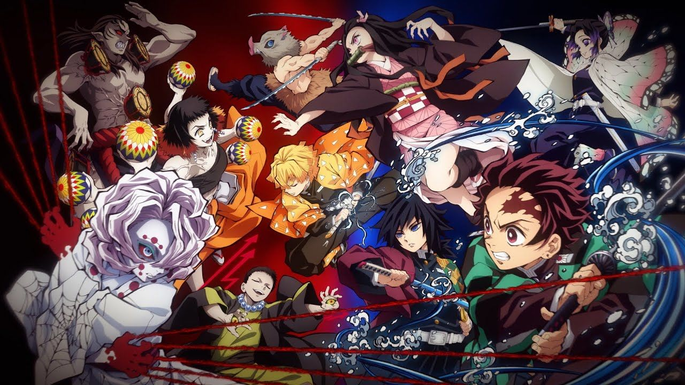

Demon Slayer
Demon Slayer: Kimetsu no Yaiba (鬼滅の刃, Kimetsu no Yaiba, "Blade of Demon Destruction"[4]) is a Japanese manga series written and illustrated by Koyoharu Gotouge. It follows teenage Tanjiro Kamado, who strives to become a demon slayer after his family was slaughtered and his younger sister, Nezuko, turned into a demon. It was serialized in Shueisha's shōnen manga magazine Weekly Shōnen Jump from February 2016 to May 2020, with its chapters collected in twenty-three tankōbon volumes. It has been published in English by Viz Media and simultaneously published by Shueisha on their Manga Plus platform.
A twenty-six episode anime television series adaptation produced by Ufotable aired in Japan from April to September 2019. A sequel film, Demon Slayer: Kimetsu no Yaiba – The Movie: Mugen Train, was released in October 2020 and became the highest-grossing anime film and Japanese film of all time. A second season of the anime series, readapting the "Mugen Train" arc seen in the film in seven episodes, and covering the "Entertainment District" arc from the manga in eleven episodes, aired from October 2021 to February 2022. A third season covering the "Swordsmith Village" arc has been announced.